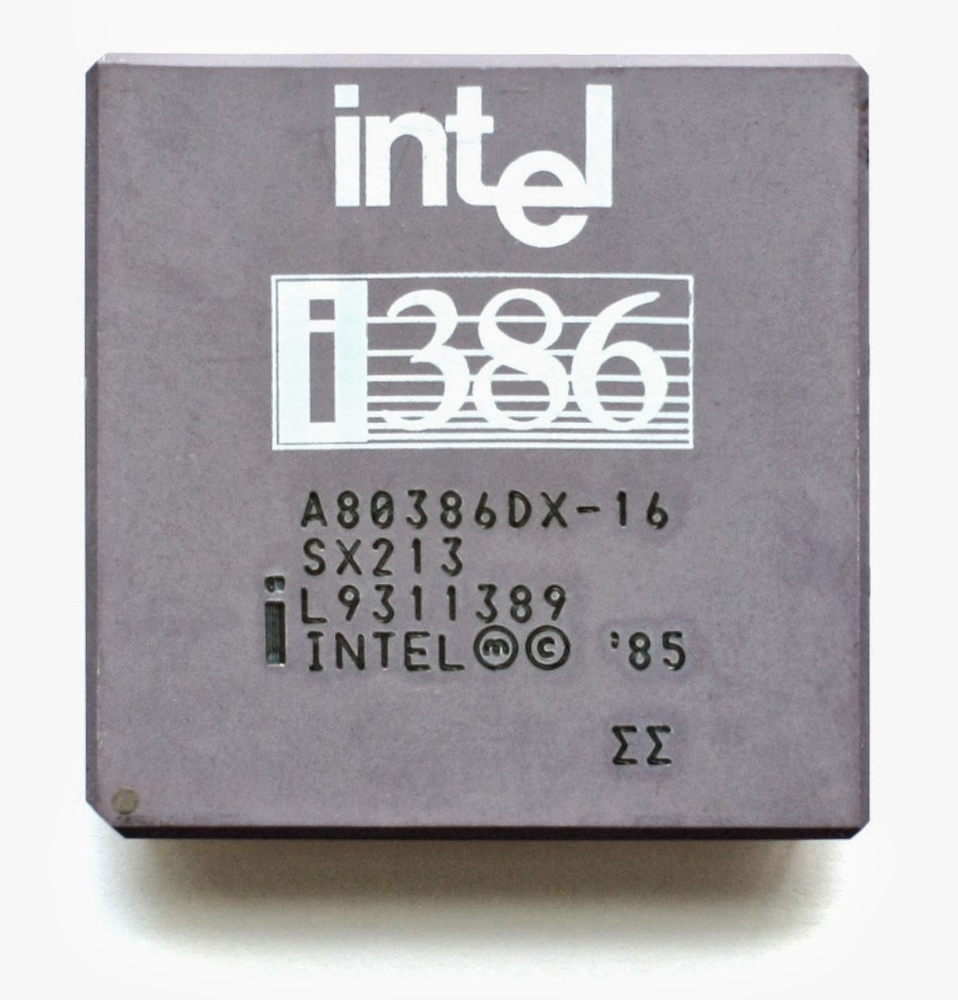

1968
Intel Founded

Intel was founded in 1968 to pioneer semiconductor innovation.
1971
First Microprocessor
Intel introduced the 4004, the world's first commercially available microprocessor.
1978
8086 Processor
The 8086 processor became the foundation of modern computing.
1985
386 Processor
Intel introduces the 386 with 32-bit architecture, enabling advanced multitasking.
1993
Pentium Revolution

The Pentium processor set a new standard for home computing and multimedia.
2006
Energy-Efficient Chips

Intel Core architecture improved performance while reducing power consumption.
2014
Conflict-Free Minerals
Intel became the first to produce conflict-free microprocessors.
2020
100% Renewable Energy (U.S.)
Intel achieved 100% renewable electricity use in U.S. operations.
2023
Net-Zero Commitment
Intel commits to achieving net-zero greenhouse gas emissions in global operations by 2040.